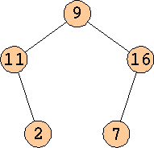
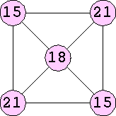

|  |  |
Any graph whose vertices have degrees 10 or less can be labeled: label each vertex with 9 times its degree. We therefore consider these labelings trivial and omit them below. In fact, Joe DeVincentis pointed out this is true as long as all the degrees d of the graph have the property that 9d has digit sum 9.
Here are some of the small digit sum graphs:
| Length | Labelings |
|---|---|
| 2 | 1, 1 2, 2 3, 3 4, 4 5, 5 6, 6 7, 7 8, 8 |
| 5 | 1, 10, 9, 17, 8 2, 11, 9, 16, 7 3, 12, 9, 15, 6 4, 13, 9, 14, 5 |
| 8 | 1, 10, 9, 17, 17, 9, 10, 1 2, 11, 9, 16, 16, 9, 11, 2 3, 12, 9, 15, 15, 9, 12, 2 4, 13, 9, 14, 14, 9, 13, 4 5, 14, 9, 13, 13, 9, 14, 5 6, 15, 9, 12, 12, 9, 15, 6 7, 16, 9, 11, 11, 9, 16, 7 8, 17, 9, 10, 10, 9, 17, 8 8, 17, 18, 19, 19, 18, 17, 8 |
In 2011, the Marin Math Circle discovered that these patterns likely continue. Only for n = 2 (mod 3) are there solutions, and these solutions are symmetric for even n and asymmetric for odd n.
| Length | Labelings |
|---|---|
| 4 | 6, 12, 6, 12 |
| 6 | 2, 10, 8, 16, 8, 10 3, 10, 7, 15, 8, 11 4, 10, 6, 14, 8, 12 4, 11, 7, 14, 7, 11 5, 10, 5, 13, 8, 13 5, 11, 6, 13, 7, 12 6, 12, 6, 12, 6, 12 9, 10, 10, 9, 17, 17 9, 11, 11, 9, 16, 16 9, 12, 12, 9, 15, 15 9, 13, 13, 9, 14, 14 17, 17, 18, 19, 19, 18 |
| 8 | 6, 12, 6, 12, 6, 12, 6, 12 |
| 10 | 6, 12, 6, 12, 6, 12, 6, 12, 6, 12 |
| Degree | Labelings |
|---|---|
| 1 | 1 2 3 4 5 6 7 8 |
| 4 | 12 24 48 |
| 7 | 21 (Ed Pegg) 42 (Ed Pegg) 84 (Ed Pegg) |
| 10 | 10 (JD) 20 (JD) 30 (JD) 40 (JD) 50 (JD) 60 (JD) 70 (JD) 80 (JD) |
| 11 | 198 (JD) |
| 13 | 195 (JD) |
| 16 | 192 (JD) 288 (JD) |
| 19 | 114 (JD) 133 (JD) 152 (JD) 190 (JD) 209 (JD) 228 (JD) 247 (JD) 266 (JD) 285 (JD) |
| 21 | 378 (JD) |
| 22 | 132 (JD) |
| m \ n | 1 | 2 | 3 | 4 | 5 | 6 | 7 | 8 | 9 |
|---|---|---|---|---|---|---|---|---|---|
| 1 | 1, 1 2, 2 3, 3 4, 4 5, 5 6, 6 7, 7 8, 8 | ||||||||
| 2 | 6, 12 | ||||||||
| 3 | |||||||||
| 4 | 3, 12 6, 24 | 12, 12 24, 24 48, 48 | |||||||
| 5 | 2, 10 4, 20 6, 30 8, 40 10, 5 12, 15 14, 25 16, 35 | 15, 30 | |||||||
| 6 | |||||||||
| 7 | 3, 21 6, 42 | 12, 21 20, 14 24, 42 28, 70 32, 35 40, 28 44, 56 48, 84 52, 49 56, 77 68, 98 | 21, 21 42, 42 84, 84 | ||||||
| 8 | 12, 24 24, 48 | 30, 24 60, 48 75, 96 | 32, 40 64, 80 88, 128 | ||||||
| 9 | |||||||||
| 10 | 1, 10 2, 20 3, 30 4, 40 5, 50 6, 60 7, 70 8, 80 | 12, 30 24, 60 | 21, 30 42, 60 | ||||||
| 11 | 18, 99 (JD) | 12, 33 24, 66 36, 99 | 54, 99 | 72, 99 | 10, 11 20, 22 30, 33 40, 44 50, 55 60, 66 70, 77 80, 88 90, 99 | 108, 99 | 126, 99 | 144, 99 48, 132 96, 165 | 162, 99 |
1 1 2 2 3 3 4 4 5 5 6 6 7 7 8 8
1 10 9 17 8 2 11 9 16 7 3 12 9 15 6 4 13 9 14 5
1 10 9 17 17 9 10 1 2 11 9 16 16 9 11 2
3 12 9 15 15 9 12 3 4 13 9 14 14 9 13 4
5 14 9 13 13 9 14 5 6 15 9 12 12 9 15 6
7 16 9 11 11 9 16 7 8 17 9 10 10 9 17 8
8 17 18 19 19 18 17 8
10 18 26 18 10 11 18 25 18 11 12 18 24 18 12 10 18 26 18 10 11 18 25 18 11 12 18 24 18 12
13 18 23 18 13 14 18 22 18 14 15 18 21 18 15 13 18 23 18 13 14 18 22 18 14 15 18 21 18 15
16 18 20 18 16 16 27 29 27 16 17 27 28 27 17 16 18 20 18 16 16 27 29 27 16 17 27 28 27 17
19 27 26 27 19 19 27 26 27 19
10 14 14 10 12 15 15 12 14 16 16 14 14 26 26 14 15 24 24 15 16 22 22 16 14 26 26 14 15 24 24 15 16 22 22 16 10 14 14 10 12 15 15 12 14 16 16 14
16 17 17 16 16 26 26 16 20 19 19 20 17 20 20 17 26 38 38 26 19 34 34 19 17 20 20 17 26 38 38 26 19 34 34 19 16 17 17 16 16 26 26 16 20 19 19 20 |
| Size | Center | Other Labelings |
|---|---|---|
| 5 | 18 | 15, 21, 15, 21 |
| 6 | 15 | 12, 12, 12, 12, 12 |
| 30 | 15, 15, 15, 15, 15 | |
| 7 | 27 | 13, 20, 16, 23, 16, 20 |
| 14, 20, 15, 22, 16, 21 | ||
| 15, 21, 15, 21, 15, 21 | ||
| 36 | 17, 20, 21, 19, 25, 24 | |
| 17, 21, 22, 19, 24, 23 | ||
| 17, 22, 23, 19, 23, 22 | ||
| 18, 20, 20, 18, 25, 25 | ||
| 18, 21, 21, 18, 24, 24 | ||
| 18, 22, 22, 18, 23, 23 | ||
| 54 | 25, 25, 27, 29, 29, 27 | |
| 25, 26, 28, 29, 28, 26 | ||
| 26, 26, 27, 28, 28, 27 | ||
| 9 | 8 | 10, 10, 10, 10, 10, 10, 10, 10 |
| 16 | 11, 11, 11, 11, 11, 11, 11, 11 | |
| 20 | 4, 10, 4, 10, 4 10, 4, 10 | |
| 24 | 12, 12, 12, 12, 12, 12, 12, 12 | |
| 28 | 14, 20, 14, 20, 14, 20, 14, 20 | |
| 32 | 13, 13, 13, 13, 13, 13, 13, 13 | |
| 36 | 15, 21, 15, 21, 15, 21, 15, 21 | |
| 40 | 8, 20, 8, 20, 8, 20, 8, 20 | |
| 14, 14, 14, 14, 14, 14, 14, 14 | ||
| 44 | 16, 22, 16, 22, 16, 22, 16, 22 | |
| 48 | 18, 30, 18, 30, 18, 30, 18, 30 | |
| 24, 24, 24, 24, 24, 24, 24, 24 | ||
| 52 | 17, 23, 17, 23, 17, 23, 17, 23 | |
| 56 | 25, 25, 25, 25, 25, 25, 25, 25 | |
| 60 | 18, 24, 18, 24, 18, 24, 18, 24 | |
| 64 | 26, 26, 26, 26, 26, 26, 26, 26 | |
| 80 | 28, 28, 28, 28, 28, 28, 28, 28 | |
| 11 | 45 | 15, 21, 15, 21, 15, 21, 15, 21, 15, 21 |
| 12 | 33 | 12, 12, 12, 12, 12, 12, 12, 12, 12, 12, 12 (JD) |
Bryce Herdt suggested investigating the smallest graph to have label n. He found that K11 has a labeling including 100, and K7 has a labeling including 108. It turns out this problem is fairly easy for all n with digit sum 9 or less. Connect n to its digital sum s and several copies of 9, each of which is connected connected to the same copy of (18-s), which in turn is connected to (9-s). If n has digit sum between 9 and 18, then connect n to s and a bunch of copies of 18, each of which is connected to (27-s), which in turn is connected to (18-s).
Bryce Herdt also suggested investigating the smallest graph whose labels are the first n positive integers, or in different bases, or both! He gave an example in base 2:
Bryce Herdt also suggested investigating the smallest graph (besides P2) whose labels have greatest common divisor n.
|
|
Joe DeVincentis wondered whether ALL graphs have these digit sum labelings.
If you can extend any of these results, please e-mail me. Click here to go back to Math Magic. Last updated 3/3/11.
{kind=link}
{kind=link}
{kind=link}
{kind=link}
{kind=link}
{kind=link}
{kind=link}
{kind=link}
{kind=link}
{kind=link}
{kind=link}
{kind=link}
{kind=link}
{kind=link}
{kind=link}
{kind=link}
{kind=link}
{kind=link}